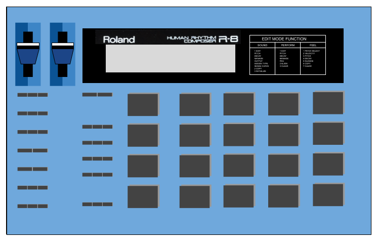

Welcome to Drummer
Drummer is a drum machine app. It uses samples of the classic Roland CR78 & R8 drum machines but is programmed by simply clicking events onto a repeating timeline.
It is built with the Howler JavaScript audio library and brought to life with Vue.js and Bootstap 4. It uses PouchDB to store your loops in a local database in your web browser, but you can also sync this collection to a remote CouchDB or Cloudant database for safe-keeping.
Have fun! This is an open-source project and the code can be found here.